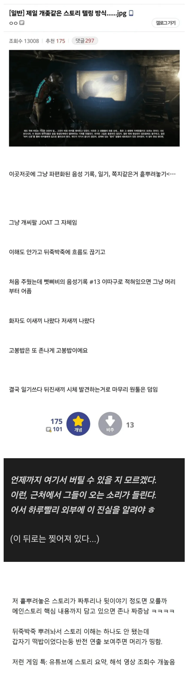

바로 딱 생각나는 게임 하나 있네
폴아웃76..

바로 딱 생각나는 게임 하나 있네
폴아웃76..
엘든링 첨할때 충격 그자체였음.. 전투중에 시작 누르기가 안된다고? 스토리 하나도 모르겠음 어딜 가야할지도 안알려줌. 누구랑 왜 싸우는지도 모름. 유튜브랑 gpt 없었으면 4번깬 아직도 이해못했을듯
저런 힌트조차 없으면 뭐 계속 하다 죽고 리트하고 그래야 하는데 그것도 비현실적이긴 함
디아2가 저러지않았나
나는 이게 게임세계관이 현실이랑가깝거나 역사물이면 이거 찾는걸좋아하는데
판타지물이거나 미래배경이면 개귀찮음
결국 세계관을 얼마나 이해하냐가 중요